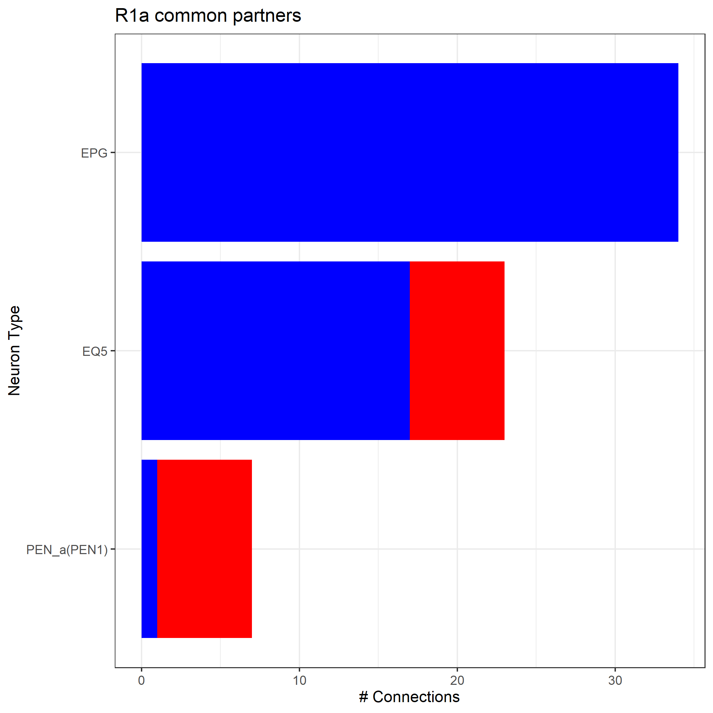

Working with Hemibrain Data
Data from the Janelia hemibrain release is available at: https://neuprint.janelia.org/?dataset=hemibrain:v1.0.1&qt=findneurons The package neuprintr can be used to work with this data in R
Fetch Hemibrain Skeletons
To access hemibrain data using R, you first have to login to the neuPrint server using the neuprint_login function. Find your token at https://neuprint.janelia.org/account\
conn = neuprint_login(server= "https://neuprint.janelia.org/",
token= "yourtokenhere")There are many ways to find a neuron, including by name, bodyid, or ROI innervation. Here, we find all hemibrain neurons with names matching ‘R1’
R1.info = neuprint_search("R1_.*")
R1.info## bodyid pre post status statusLabel cropped name type cellBodyFiber voxels soma
## 1 1322133296 210 431 Traced Roughly traced FALSE R1_a(ring)(AVM07)_L R1_a <NA> 235493563 FALSE
## 2 1291103485 189 368 Traced Roughly traced FALSE R1_a(ring)(AVM07)_L R1_a <NA> 224315155 FALSE
## 3 1322133768 193 396 Traced Roughly traced FALSE R1_a(ring)(AVM07)_L R1_a <NA> 226333093 FALSE
## 4 1291444314 215 502 Traced Roughly traced FALSE R1_a(ring)(AVM07)_L R1_a <NA> 283604137 FALSE
## 5 1352823209 207 466 Traced Roughly traced FALSE R1_a(ring)(AVM07)_L R1_a <NA> 268498123 FALSE
## 6 1322129437 212 388 Traced Roughly traced FALSE R1_a(ring)(AVM07)_L R1_a <NA> 232923461 FALSE
## 7 1322133825 195 351 Traced Roughly traced FALSE R1_a(ring)(AVM07)_L R1_a <NA> 222327266 FALSE
## 8 5813059835 217 459 Traced Roughly traced FALSE R1_a(ring)(AVM07)_L R1_a <NA> 220977241 FALSE
## 9 1294414279 214 758 Traced Traced FALSE R1_a(ring)(AVM07)_R R1_a igL2 494221314 TRUE
## 10 1291435551 214 633 Traced Traced FALSE R1_a(ring)(AVM07)_R R1_a igL2 442178292 TRUE
## 11 1322129781 178 560 Traced Traced FALSE R1_a(ring)(AVM07)_R R1_a igL2 406452064 TRUE
## 12 1355806197 203 599 Traced Traced FALSE R1_a(ring)(AVM07)_R R1_a igL2 432301213 TRUE
## 13 1322133858 200 567 Traced Traced FALSE R1_a(ring)(AVM07)_R R1_a igL2 392021268 TRUE
## 14 1322470462 212 631 Traced Traced FALSE R1_a(ring)(AVM07)_R R1_a igL2 459817081 TRUE
## 15 1322470368 211 703 Traced Traced FALSE R1_a(ring)(AVM07)_R R1_a igL2 507360636 TRUE
## 16 1322466938 215 712 Traced Traced FALSE R1_a(ring)(AVM07)_R R1_a igL2 446424902 TRUE
## 17 1291094742 233 571 Traced Roughly traced FALSE R1_b(ring)(AVM07)_L R1_b <NA> 275733636 FALSE
## 18 1322129724 201 482 Traced Roughly traced FALSE R1_b(ring)(AVM07)_L R1_b <NA> 244179816 FALSE
## 19 1322133531 189 468 Traced Roughly traced FALSE R1_b(ring)(AVM07)_L R1_b <NA> 234032804 FALSE
## 20 1322129730 202 509 Traced Roughly traced FALSE R1_b(ring)(AVM07)_L R1_b <NA> 234533589 FALSE
## 21 1322133891 203 499 Traced Roughly traced FALSE R1_b(ring)(AVM07)_L R1_b <NA> 281711914 FALSE
## 22 1322142804 88 158 Traced Roughly traced FALSE R1_b(ring)(AVM07)_L R1_b <NA> 103617394 FALSE
## 23 1353168228 82 211 Traced Roughly traced FALSE R1_b(ring)(AVM07)_L R1_b <NA> 104693827 FALSE
## 24 1322137688 199 753 Traced Traced FALSE R1_b(ring)(AVM07)_R R1_b igL2 428829246 TRUE
## 25 1294082002 250 793 Traced Traced FALSE R1_b(ring)(AVM07)_R R1_b igL2 515920224 TRUE
## 26 1291094620 240 762 Traced Traced FALSE R1_b(ring)(AVM07)_R R1_b igL2 511574757 TRUE
## 27 1291099014 211 796 Traced Traced FALSE R1_b(ring)(AVM07)_R R1_b igL2 484088216 TRUE
## 28 1291435693 242 821 Traced Traced FALSE R1_b(ring)(AVM07)_R R1_b igL2 512326322 TRUE
## 29 1322138079 216 669 Traced Traced FALSE R1_b(ring)(AVM07)_R R1_b igL2 455658404 TRUE
## 30 1322129610 218 778 Traced Traced FALSE R1_b(ring)(AVM07)_R R1_b igL2 451779426 TRUE#read in the skeletons as neurons
R1_neurons = neuprint_read_neurons(R1.info$bodyid)
open3d(userMatrix=hemibrainMatrix,windowRect=windowRect,zoom=0.7)
plot3d(R1_neurons,lwd=2,WithNodes=FALSE,soma=TRUE)Fetch brain regions
You can see a list of all available brain region meshes using the following command(*Note: not all of these meshes are currently available for download):
neuprint_ROIs()## [1] "a'1(R)" "a'2(R)" "a'3(R)" "a'L(L)" "a'L(R)"
## [6] "a1(R)" "a2(R)" "a3(R)" "AB(L)" "AB(R)"
## [11] "aL(L)" "AL(L)" "aL(R)" "AL(R)" "AME(R)"
## [16] "AMMC" "AOT(R)" "AOTU(R)" "ATL(L)" "ATL(R)"
## [21] "AVLP(R)" "b'1(R)" "b'2(R)" "b'L(L)" "b'L(R)"
## [26] "b1(R)" "b2(R)" "bL(L)" "bL(R)" "BU(L)"
## [31] "BU(R)" "CA(L)" "CA(R)" "CAN(R)" "CRE(-ROB,-RUB)(R)"
## [36] "CRE(L)" "CRE(R)" "CX" "dACA(R)" "EB"
## [41] "EBr1" "EBr2r4" "EBr3am" "EBr3d" "EBr3pw"
## [46] "EBr5" "EBr6" "EPA(L)" "EPA(R)" "FB"
## [51] "FBl1" "FBl2" "FBl3" "FBl4" "FBl5"
## [56] "FBl6" "FBl7" "FBl8" "FBl9" "FLA(R)"
## [61] "g1(R)" "g2(R)" "g3(R)" "g4(R)" "g5(R)"
## [66] "GA(R)" "GC" "GF(R)" "gL(L)" "gL(R)"
## [71] "GNG" "GOR(L)" "GOR(R)" "hemibrain" "IB"
## [76] "ICL(L)" "ICL(R)" "INP" "IPS(R)" "lACA(R)"
## [81] "LAL(-GA)(R)" "LAL(L)" "LAL(R)" "LH(R)" "LO(R)"
## [86] "LOP(R)" "LX(L)" "LX(R)" "mALT(L)" "mALT(R)"
## [91] "MB(+ACA)(R)" "MB(L)" "MB(R)" "ME(R)" "NO"
## [96] "NO(L)" "NO(R)" "NO1(L)" "NO1(R)" "NO2(L)"
## [101] "NO2(R)" "NO3(L)" "NO3(R)" "OL(R)" "PB"
## [106] "PB(L1)" "PB(L2)" "PB(L3)" "PB(L4)" "PB(L5)"
## [111] "PB(L6)" "PB(L7)" "PB(L8)" "PB(L9)" "PB(R1)"
## [116] "PB(R2)" "PB(R3)" "PB(R4)" "PB(R5)" "PB(R6)"
## [121] "PB(R7)" "PB(R8)" "PB(R9)" "PED(R)" "PENP"
## [126] "PLP(R)" "POC" "PRW" "PVLP(R)" "ROB(R)"
## [131] "RUB(L)" "RUB(R)" "SAD" "SAD(-AMMC)" "SCL(L)"
## [136] "SCL(R)" "SIP(L)" "SIP(R)" "SLP(R)" "SMP(L)"
## [141] "SMP(R)" "SNP(L)" "SNP(R)" "SPS(L)" "SPS(R)"
## [146] "vACA(R)" "VES(L)" "VES(R)" "VLNP(R)" "VMNP"
## [151] "WED(R)"To fetch these messages, use neuprint_ROI_mesh:
#plot our neurons of interest
open3d(userMatrix=hemibrainMatrix,windowRect=windowRect,zoom=0.7)
plot3d(R1_neurons,lwd=2,WithNodes=FALSE,soma=TRUE)
#add EB and LAL meshes
EB=neuprint_ROI_mesh(roi = "EB")
plot3d(EB, add = TRUE, alpha = 0.1)
LAL_R=neuprint_ROI_mesh(roi = "LAL(R)")
plot3d(LAL_R, add = TRUE, alpha = 0.1)Compare with neurons in other brain spaces
The JRCFIB2018F template brain can be used to transform skeletons fetched from the hemibrain into other tempate brain spaces for comparisons with other neurons. To download the template brain and necessary registration files, run the following code (this takes a while but only needs to be done once).
remotes::install_github("natverse/nat.jrcbrains")
nat.jrcbrains::download_saalfeldlab_registrations()Then apply the transformations. In this example, the hemibrain data is being transformed into the FCWB template brain space so that it can be used to find similar flycircuit neurons or gal4 lines via nblast. *Note: Java and rJava need to be installed in order to run the transformation:
#first transform into an intermediate brain space for which the transofrmation is defined
R1.jrc2018F = xform_brain(R1_neurons*8/1000, reference="JRC2018F", sample="JRCFIB2018F")
#then transform into FCWB brain space
R1.fcwb = xform_brain(R1.jrc2018F, reference='FCWB', sample='JRC2018F')
#plot neurons with fcwb template brain
open3d(userMatrix=rotationMatrix,windowRect=windowRect,zoom=0.6)
plot3d(R1.fcwb,lwd=2,WithNodes=FALSE)
plot3d(FCWB)Find synapse locations
R1_synapses=neuprint_get_synapses(R1.info$bodyid)
open3d(userMatrix=hemibrainMatrix,windowRect=windowRect,zoom=0.7)
plot3d(R1_neurons,col='black',lwd=2,WithNodes=FALSE,soma=TRUE)
points3d(xyzmatrix(R1_synapses),col='red',lwd=2)Get synaptic partners
Finding all the presynaptic partners of the R1 neurons
#get all inputs to R1 neurons
R1_all_inputs=unique(neuprint_connection_table(R1.info$bodyid,prepost='PRE')$partner)
R1_all_inputs.neurons=neuprint_read_neurons(R1_all_inputs$bodyid)
open3d(userMatrix=hemibrainMatrix,windowRect=windowRect,zoom=0.7)
plot3d(R1_neurons,col='black',lwd=2,WithNodes=FALSE,soma=TRUE)
plot3d(R1_all_inputs.neurons,col='red',lwd=2,WithNodes=FALSE,soma=TRUE)Finding all the postsyanptic partners of the R1 neurons
R1_all_outputs=unique(neuprint_connection_table(R1.info$bodyid,prepost='POST')$partner)
R1_all_outputs.neurons=neuprint_read_neurons(R1_all_outputs)
open3d(userMatrix=hemibrainMatrix,windowRect=windowRect,zoom=0.7)
plot3d(R1_neurons,col='black',lwd=2,WithNodes=FALSE,soma=TRUE)
plot3d(R1_all_outputs.neurons,col='blue',lwd=2,WithNodes=FALSE,soma=TRUE)Next,group these inptus and outputs by type
library(plyr)
#group the inputs by type
R1_all_inputs_count=count(neuprint_get_meta(R1_all_inputs),'type')
R1_all_inputs_count=subset(R1_all_inputs_count,freq>5)
R1_all_inputs_count=subset(R1_all_inputs_count,type!='NA')
#group the outputs by type
R1_all_outputs_count=count(neuprint_get_meta(R1_all_outputs),'type')
R1_all_outputs_count=subset(R1_all_outputs_count,freq>5)
R1_all_outputs_count=subset(R1_all_outputs_count,type!='NA')
#aggregate data and plot as a bar graph
R1_all_partners=merge(R1_all_inputs_count,R1_all_outputs_count,by='type',all=TRUE)
R1_all_partners.m=melt(R1_all_partners, id.vars='type')
R1_all_partners.m=R1_all_partners.m[order(-R1_all_partners.m$value),]
R1_all_partners.m$Groups <- factor(R1_all_partners.m$type, levels = R1_all_partners[order(R1_all_partners$freq.x),]$type)
plot<-ggplot(R1_all_partners.m,aes(fill=variable,x=Groups,y=value))+geom_bar(stat="identity")+
coord_flip()+theme_bw()+scale_x_discrete(name ="Region")+ ylab('Synapse Count')+theme(legend.position="none")+scale_fill_manual(values=c("blue","red"))
print(plot)We can also look only at the synaptic partners which are common to the set of all R1 neurons using neuprint_common_connectivity
R1_common_inputs=neuprint_common_connectivity(R1.info$bodyid,prepost='PRE')
R1_common_inputs.neurons=neuprint_read_neurons(as.character(colnames(R1_common_inputs)))
R1_common_outputs=neuprint_common_connectivity(R1.info$bodyid,prepost='POST')
R1_common_outputs.neurons=neuprint_read_neurons(as.character(colnames(R1_common_outputs)))#plot common inputs and output
open3d(userMatrix=hemibrainMatrix,windowRect=windowRect,zoom=0.7)
plot3d(R1_neurons,col='black',lwd=2,WithNodes=FALSE,soma=TRUE)
plot3d(R1_common_inputs.neurons,col='red',lwd=2,WithNodes=FALSE,soma=TRUE)
plot3d(R1_common_outputs.neurons,col='blue',lwd=2,WithNodes=FALSE,soma=TRUE)
Grouping these inputs and outputs by type, we get:
R1_common_inputs_df=neuprint_get_meta(as.character(colnames(R1_common_inputs)))
R1_common_outputs_df=neuprint_get_meta(as.character(colnames(R1_common_outputs)))
R1_input_type=count(R1_common_inputs_df,'type')
R1_output_type=count(R1_common_outputs_df,'type')
R1_common_partners=merge(R1_input_type,R1_output_type,by='type',all=TRUE)
R1_common_partners.m=melt(R1_common_partners, id.vars='type')
R1_common_partners.m=R1_common_partners.m[order(-R1_common_partners.m$value),]
R1_common_partners.m$Groups <- factor(R1_common_partners.m$type, levels = R1_common_partners[order(R1_common_partners$freq.y),]$type)
R1_plot=ggplot(R1_common_partners.m,aes(fill=variable,x=Groups,y=value))+geom_bar(stat="identity")+ ggtitle('R1a common partners')+
coord_flip()+theme_bw()+scale_x_discrete(name ="Neuron Type")+ ylab('# Connections')+theme(legend.position="none")+scale_fill_manual(values=c("blue","red"))
print(R1_plot)
Evaluate neuron connectivity
The neuprint_get_adjacency_matrix function can be used to generate an adjacency matrix between two sets of neurons. Here, we look at the connectivity between R1 and EPG neurons.
#find all EPG neurons
EPG.info=neuprint_search(".*EPG.*")
EPG.info=subset(EPG.info,type=='EPG')
EPG_neurons=neuprint_read_neurons(EPG.info$bodyid)
plot3d(EPG_neurons)
#get adjacency matrix
#right now its adding both together- change so that rows are only R1, columns are only EPG
adj_mat=neuprint_get_adjacency_matrix(inputids=R1.info$bodyid,outputids=EPG.info$bodyid)
#plot results as a heatmap
rownames(adj_mat)=vector(mode='character',length=dim(adj_mat)[1])
colnames(adj_mat)=vector(mode='character',length=dim(adj_mat)[2])
Heatmap(adj_mat,row_title='R',column_title='EPG',show_row_dend=FALSE,
show_column_dend=FALSE,show_row_names=FALSE,show_column_names=FALSE,heatmap_legend_param=list(title='weight'))